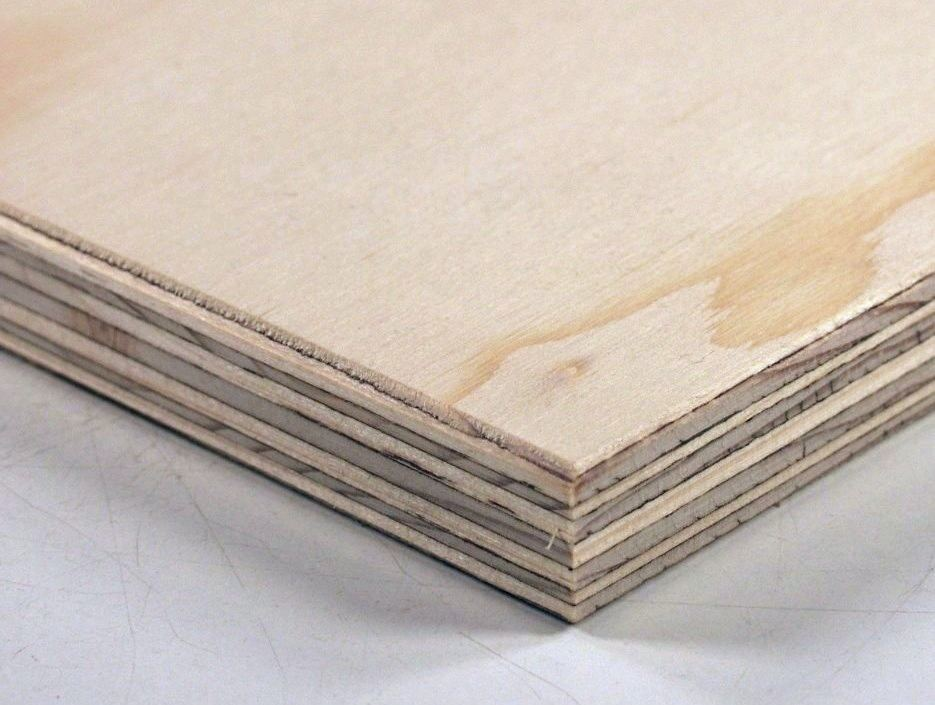
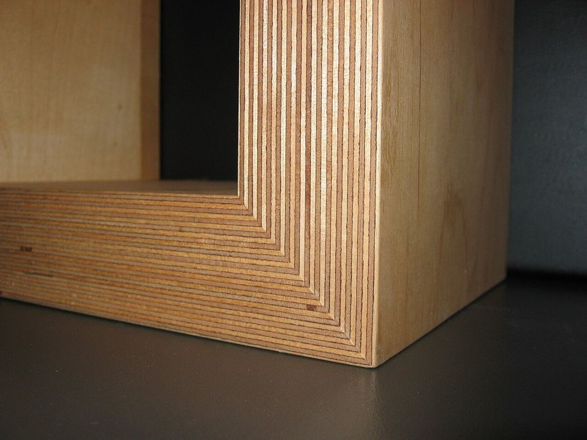
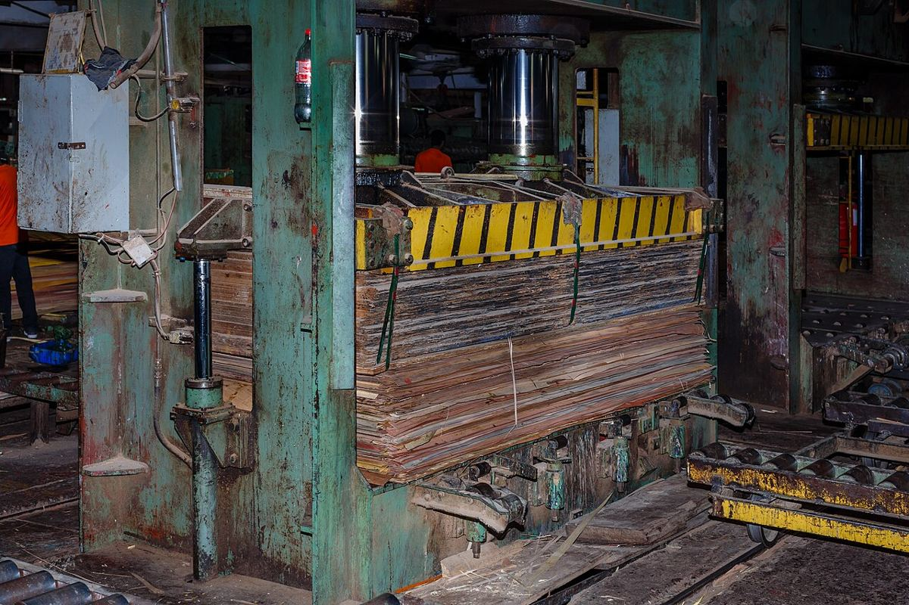
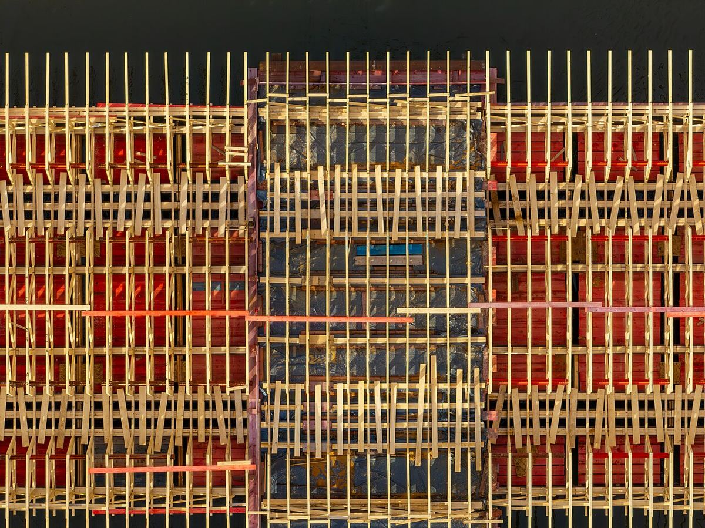
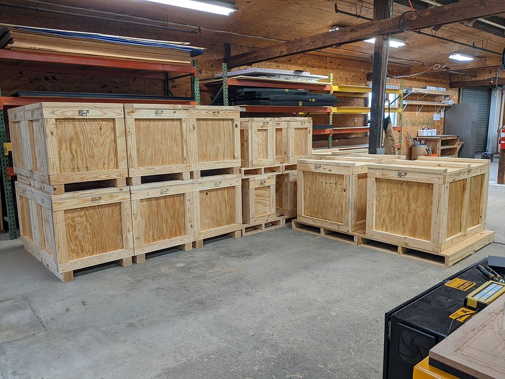

Photo credits
Product photographs on this site are freely licensed images from Wikimedia Commons, used under the licences below. They illustrate each product type and are not photographs of a specific mill's stock. Images may be cropped and resized.
| Image | Author | Licence | Source | |
|---|---|---|---|---|
 | Sandakan Sabah Plywood-Factory-55a.jpg | CEphoto, Uwe Aranas | CC BY-SA 3.0 | Wikimedia Commons |
 | Spruce plywood.JPG | Bystander | CC BY-SA 3.0 | Wikimedia Commons |
 | Plywood.jpg | Rotor DB at English Wikipedia | CC BY-SA 3.0 | Wikimedia Commons |
 | Birke Multiplex.JPG | Lutzeputz | CC BY-SA 3.0 | Wikimedia Commons |
 | Canoe stitch and glue.jpg | Kevin Saff | CC BY-SA 2.0 | Wikimedia Commons |
 | Lobster 12-5 stitch and glue.jpg | Lämpel | CC BY-SA 2.0 | Wikimedia Commons |
 | Tischlerplatte 2009.jpg | Elke Wetzig (elya) | CC BY-SA 3.0 | Wikimedia Commons |
 | Sandakan Sabah Plywood-Factory-48.jpg | CEphoto, Uwe Aranas | CC BY-SA 3.0 | Wikimedia Commons |
 | München — Armenversorgungshaus St. Martin — Zimmertür.jpg | Mattes | CC BY 3.0 de | Wikimedia Commons |
 | Sandakan Sabah Plywood-Factory-54.jpg | CEphoto, Uwe Aranas | CC BY-SA 3.0 | Wikimedia Commons |
 | Buger Brücke Neubau Schalung-20240218-RM-102143.jpg | Reinhold Möller Ermell | CC BY-SA 4.0 | Wikimedia Commons |
 | Bauzaun aus gelben Schaltafeln, Ernst-Moritz-Arndt-Gymnasium Bonn 01.jpg | KaiKemmann | CC BY-SA 4.0 | Wikimedia Commons |
 | Plywood sheathed crate 2014-03-25.jpg | DavidCary | CC BY-SA 3.0 | Wikimedia Commons |
 | Standard-plywood-shipping-crate-vol-case.jpg | VCCmatt | CC BY-SA 4.0 | Wikimedia Commons |
 | Rubber tree and latex cup.jpg | Wee Hong | CC BY-SA 4.0 | Wikimedia Commons |
 | Территория комбината, сформированные сушильные пакеты.jpg | Светлана Глазкина | CC BY-SA 3.0 | Wikimedia Commons |